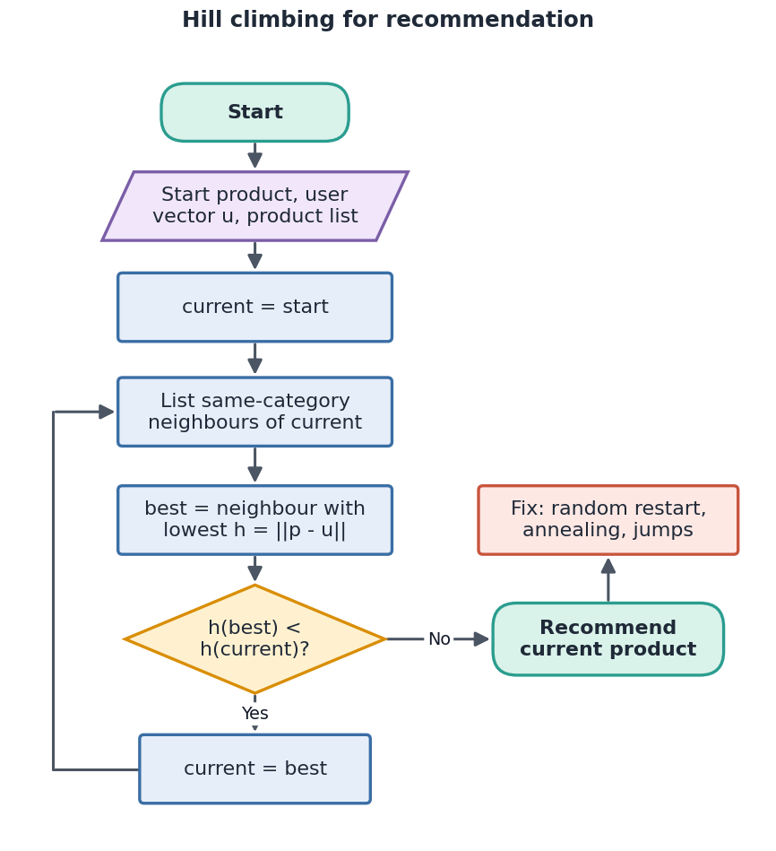
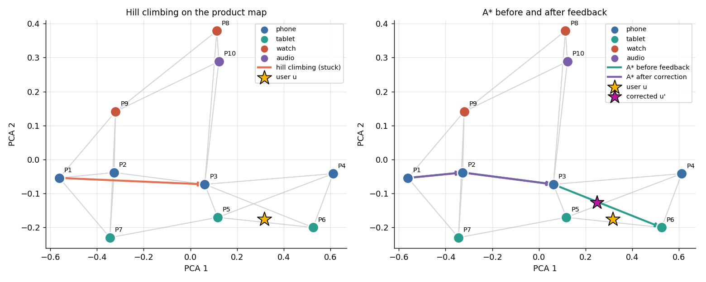
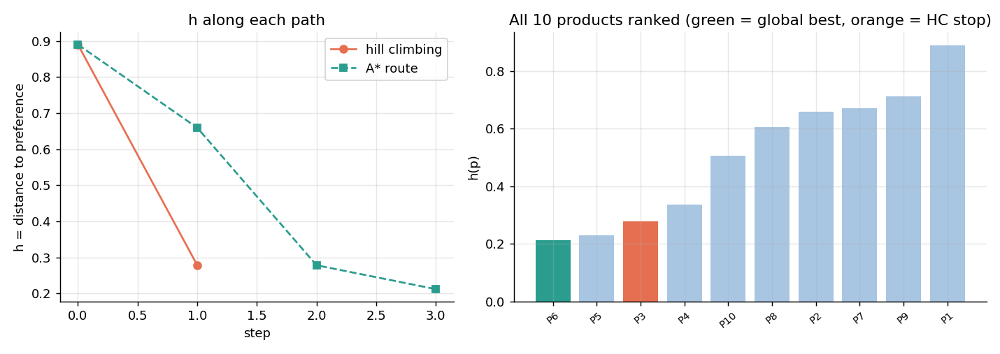
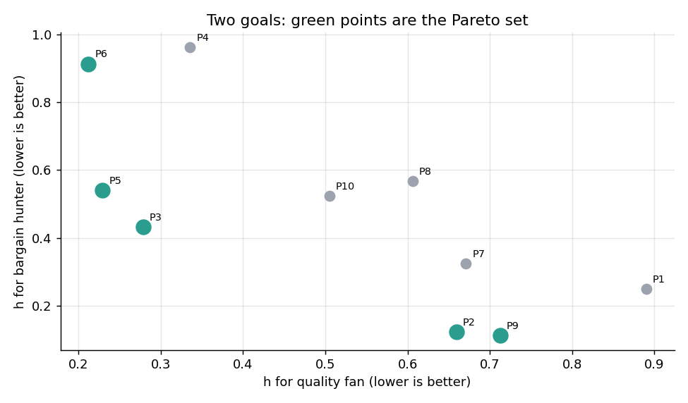
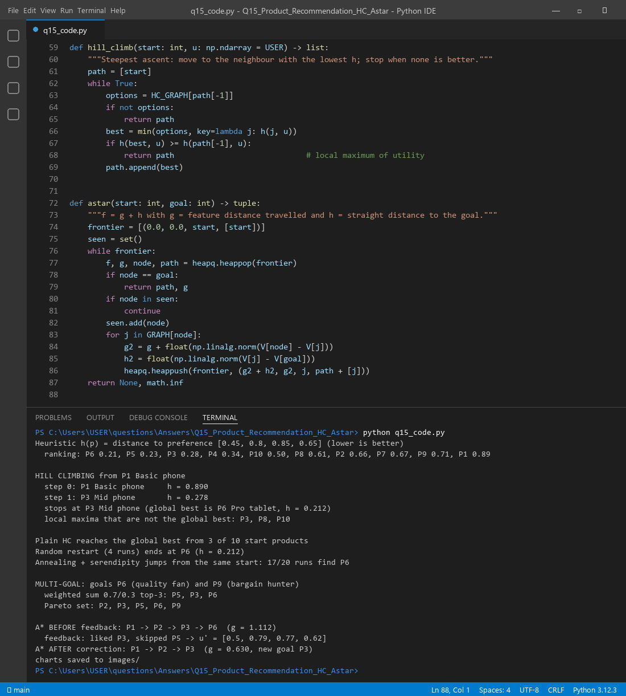

Think of each product as a point described by a few numbers. The shopper is also a point: the product they would love. A recommender starts from a popular product and keeps stepping to a more similar product that is closer to the shopper's taste. That is search. It is quick, but a greedy search can stop on a "pretty good" product when a better one sits one category away.
| Element | Definition |
|---|---|
| Heuristic h(p) | Distance between the product vector and u: h(p) = ||p − u||. Lower is better, 0 is a perfect match. |
| Start state | P1 Basic phone (the most popular item) |
| Goal state | The product with the lowest h, or any product with h ≤ ε |
| Actions | Move to a similar product (swap to a nearby model; for A*, also to another category) |
| Neighbours | Hill climbing: other products of the same category. A*: the 3 most similar products overall. |
| Path cost g (A*) | Feature distance travelled, i.e. how big a jump the shopper must accept |
The real h values for u: P6 0.21, P5 0.23, P3 0.28, P4 0.34, P10 0.50, P8 0.61, P2 0.66, P7 0.67, P9 0.71, P1 0.89. The global best is P6 Pro tablet (h = 0.212).

function HillClimbRecommend(start, u):
current ← start
loop:
best ← neighbour of current with the lowest h(p) = ||p − u||
if h(best) ≥ h(current): return current # local maximum of utility
current ← best
function AStar(start, goal):
OPEN ← {start with f = 0}; g(start) ← 0
while OPEN not empty:
n ← node in OPEN with lowest f = g(n) + h(n) # h(n) = ||p_n − p_goal||
if n = goal: return path
for each neighbour m of n: g(m) ← g(n) + ||p_n − p_m||; add m to OPEN
function Correct(u, liked, skipped): # Rocchio style
return u + α·(p_liked − u) − β·(p_skipped − u)
| Step | Product | h | What happened |
|---|---|---|---|
| 0 | P1 Basic phone | 0.890 | start |
| 1 | P3 Mid phone | 0.278 | best phone, a big gain; no other phone is closer, so stop |
The search stops at P3 (h = 0.278) while the true best is P6 Pro tablet (0.212).
The global maximum is P6 Pro tablet. The real run found three local maxima: P3 Mid phone, P8 Smart watch and P10 Earbuds. Each is the best product inside its own category, so no same-category move improves it. Hill climbing reached the global best from only 3 of 10 start products (the tablets). The cause is the narrow neighbourhood: the better product is one category away and cannot be seen.


Add a second shopper (a bargain hunter, uB = (0.85, 0.40, 0.50, 0.40)). Their best product is P9. Three options:

A* uses f = g + h. Here g is the feature distance already travelled and h is the straight-line distance to the goal. It can cross categories, so it finds the tablet.
The target vector moved toward what the shopper actually liked, and the route got shorter and safer.
| Idea | Result in this run |
|---|---|
| Random restart (4 runs) | Ends at P6, h = 0.212, the global best |
| Annealing + serendipity jumps (accept a worse product sometimes, with a 20% chance of a random jump; cooling lowers the risk) | 17 of 20 runs find P6 from the same start that traps plain hill climbing |
| Tabu list | Remember seen products so the search never loops back |
| Humanised moves | Mood or season changes h; a deliberate "surprise at the critical point" suggestion near the end keeps it fresh |
Plain hill climbing: 3 of 10 starts succeed. Restarts and annealing with jumps repair the gap, because they can leave a local maximum.
q15_code.py defines the 10 products, h, hill climbing, A*, the correction, restarts and annealing, and draws every chart.

Files in this folder: q15_code.py (source), q15_code.ipynb (Colab/Jupyter version, already run),
q15_output.txt (console output), images/ (all figures).